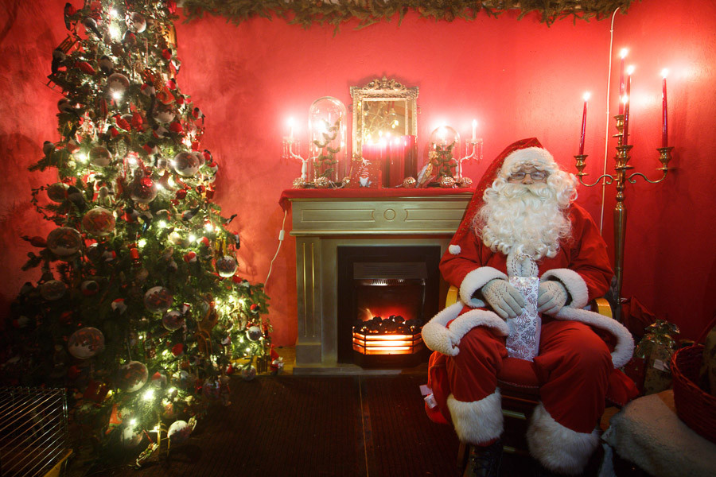
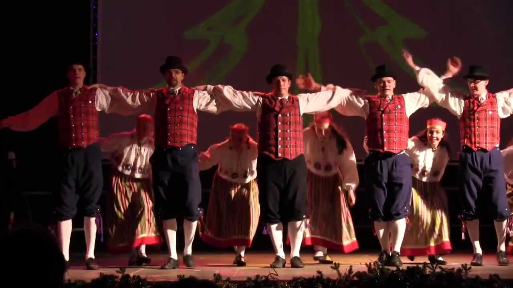

Kirjeldus
Traditsioonist lähtudes avab Tallinna jõulupood sel aastal oma kabiinid, et anda meile rõõm nautida muinasjuttule iseloomulikku jõule. Raekoja platsil on suur jõulupuu, jõulude sümbol, ja meie linn on uhke, et ta on esimene koht maailmas, kus jõulupuu püstitati: 1441. aastal enam, mitte vähem!

Viimastel aastatel on Raekoja Plats'i ilusate keskaegsete hoonetega tervikuna kujunenud turg mitte ainult Eestist, vaid kogu Euroopast jõulude ja turismi sümboliks, mida kirjeldatakse kui üht maailma parimat jõuluturgu. kontinendil ja maailmas, mis saavad igal aastal ligi miljon külastajat üle kogu maailma, lastele on tagatud kindlus tänu jõuluvana, kes oma puumajast annab kommid lastele, kes kõige paremini salme jagavad (laulavad ja kirjutavad salme või luuletused on meie riigi traditsioonid meie Läti ja Leedu Balti naabritega). Erinevates kabiinides saate osta kõrgekvaliteedilistest käsitöödest talvitarvikutele, nagu kindad või sallid. Ja kui sa vaatad kioskide vaatamist ja te märkate, et teie kõht röövib raevukalt, saate oma söögiisu rahuldada mõne ingverikommi või maitsva Eesti röstitud roogaga. Võite proovida ka kareda veini, tüüpilist jooki Baltimaadest, Skandinaavias ja Venemaalt. Või rahvusvaheline kuum šokolaad, mis on alati väga hea. Jõulud on olemas ja seda tugevdab eriline kultuuriprogramm. Nädalavahetustel mängivad turguetapil Eestist ja välismaalt erinevad muusikarühmad ning igal pühapäeval tulevad adventperioodi ajal küünal, mis on samal ajal Eesti ja Vene luterlike kirikute pastoritega ning Linnapea annab turule tervitavatele inimestele tervituskõnesid ning 2019. aasta tervitab veelgi eriprogrammi!
Tallinna jõuluturg tervitab kõiki avatud relvaga. Häid jõule.
Kalender
Turg avab oma uksed 16. novembrist 7. jaanuarini iga päev kella 10.00-20.00. Kuumaid jooke (kuuma veini) saab nautida pühapäevast neljapäevani kuni kella 22.00 ning reedeti ja laupäeviti kuni 23.00. Eriline jõuluprogramm: reedel kella 17.00-17.00, laupäeviti ja pühapäeviti kella 12.00-14.00 Alates 2. detsembrist tervitab Jõuluvana lapsi esmaspäevast pühapäevani kella 12.00-st. 19:00


Osalejad
Igal nädalavahetusel osalevad erinevad rahvusgrupid meie riigist ja välismaalt, kes on valmis andma meile elava näituse.
Reede, 16. november:Viisuveeretajad (Eesti), Carolina (Ameerika Ühendriigid)
Laupäev, 17. november:Black and White (Iirimaa), Mariliis Jögeva (Eesti) Solas (Iirimaa), Tantsusarvikud (Eesti)
Pühapäev, 18. november:Pühalepa (Eesti), Tantsuskool RAPTI (Kreeka)
Reede, 23. november:Leesikad (Eesti)
Laupäev, 24. november:Juhukse (Eesti), Zahira (Eesti)
Pühapäev, 25. november:Cantitores (Soome), Kirmas (Eesti)
Reede, 30. november:Nömme (Eesti), Söleke (Eesti), Free Flow Studio (Eesti)

Laupäev, 1. detsember:Moroshka (Venemaa), Tammed ja Toomed (Eesti), Harku Harakad (Eesti)
Pühapäev 2. detsember:Kopli (Eesti), Tallinna luteri koguduste koorid.
Reede 7. detsember:Vöör ja Ahter (Eesti), Tantsuskool RAPTI (Kreeka)
Laupäev 8. detsember:Kuu (Eesti), Panter (Eesti), KT Stuudio (Eesti)
Pühapäev 9. detsember:Ellerhein (Eesti), Ingliskad (Eesti)
Reede 14. detsember:Köku (Eesti), VAT Stuudio (Eesti)
Laupäev 15. detsember:Tuisuline (Eesti), Happy Feet (Uus Meremaa), Jürid-Maarid (Eesti)
Pühapäev 16. detsember:Siki (Eesti), MYDANCE (Rootsi)
Reede 21. detsember:Desiree (Eesti)
Laupäev 22. detsember:Kolgaküla Laneerid (Eesti), Free Flow Studio (Eesti)
Pühapäev 23. detsember:Löoke (Eesti), Modus (Saksamaa)
Reede 28. detsember:LTF (Ameerika Ühendriigid), Alhambra (Ameerika Ühendriigid), Asmarah (Eesti), Valeria Nikolajeva (Venemaa)
Laupäev 29. detsember:Beatrice Nebis (Eesti), Aler (Gruusia)
Pühapäev 30. detsember:Modus (Saksamaa), Lili Adeni (Eesti)
Reede 31. detsember:Eriline uusaasta programm, Nömme Huvikooli (Eesti)
Laupäev 4. jaanuar:Terek (Venemaa), Jagody (Poola), Sakala Laululapsed (Eesti)
Pühapäev 5. jaanuar:Pääsuke (Eesti), Kodu (Eesti), Leigarid (Eesti)
Reede 6. jaanuar:Koit (Eesti), Juri Zaljubovski (Venemaa), Mustad Kassi (Eesti).Turu sulgemine
Osalejad
Raekoja Plats asub Tallinna ajaloolise keskuse südames. Nende turistide jaoks, kes on viibinud väljaspool keskust või perifeeria elanikke, on linna bussi- ja trammipeatused vaid 5-minutilise jalutuskäigu kaugusel. Trammi liin 4 ühendab Raekoja platsid otse lennujaama.
 Lähim bussipeatus: Viru (read 21,21B,40,41,48,73)
Lähim bussipeatus: Viru (read 21,21B,40,41,48,73)
 Lähim trammipeatus: Viru (read 3 ja 4)
Lähim trammipeatus: Viru (read 3 ja 4)